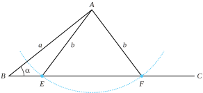
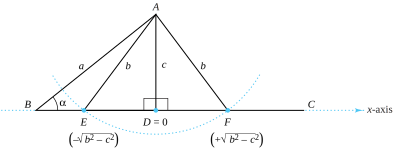
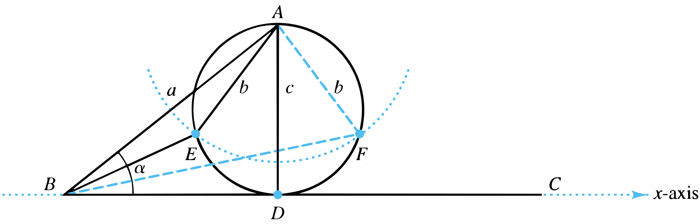
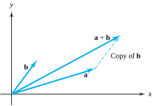
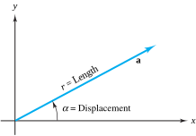
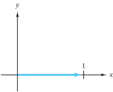
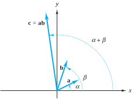
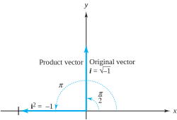

Construct a triangle determined by two sides and an angle not included between those sides.
Section 1.1 The Origin of Complex Numbers
Complex analysis can roughly be thought of as the subject that applies the theory of calculus to imaginary numbers. But what exactly are imaginary numbers? Usually, students learn about them in high school with introductory remarks from their teachers along the following lines: “We can’t take the square root of a negative number. But let’s pretend we can and begin by using the symbol \(i=\sqrt{-1}\) .” Rules are then learned for doing arithmetic with these numbers. At some level the rules make sense: if \(i=\sqrt{-1}\text{,}\) it stands to reason that \(i^2=-1\text{.}\) However, it is not uncommon for students to wonder whether they are really doing magic rather than mathematics.
If you ever felt that way, congratulate yourself!—you are in the company of some of the great mathematicians from the sixteenth through the nineteenth centuries. They also were perplexed by the notion of roots of negative numbers. Our purpose in this section is to highlight some of the episodes in the very colorful history of how thinking about imaginary numbers developed. We intend to show you that, contrary to popular belief, there is really nothing imaginary about “imaginary umbers.” They are just as real as “real numbers.”
Our story begins in 1545. In that year, the Italian mathematician Girolamo Cardano published Ars Magna (The Great Art), a 40-chapter masterpiece in which he gave for the first time a method for solving the general cubic equation
\begin{equation}
z^3 + a_2 z^2 +a_1z + a_0 = 0\text{.}\tag{1.1.1}
\end{equation}
Cardano did not have at his disposal the power of today’s algebraic notation, and he tended to think of cubes or squares as geometric objects rather than algebraic quantities. Essentially, however, his solution began by making the substitution \(z=x-\frac{a_2}{3}\text{.}\) This move transformed Equation (1.1.1) into a cubic equation without a squared term, which is called a depressed cubic. To illustrate, begin with \(z^3 + 9z^2 + 24z + 20 = 0\) and substitute \(z = x - \frac{a_2}{3} = x -\frac{9}{3} = x - 3\text{.}\) The equation then becomes \((x-3)^3 +9(x-3)^2 +24(x-3) + 20 = 0\text{,}\) which simplifies to \(x^3 -3x + 2 = 0\text{.}\)
You need not worry about the computational details here, but in general the substitution \(z = x - \frac{a_2}{3}\) transforms Equation (1.1.1) into
\begin{equation}
x^3 + bx + c = 0\text{,}\tag{1.1.2}
\end{equation}
where \(b = a_1 - \frac{1}{3}a_2^2\text{,}\) and \(c = -\frac{1}{3}a_1a_2 + \frac{2}{27}a_2^3 + a_0\text{.}\)
If Cardano could get any value of \(x\) that solved a depressed cubic, he could easily get a corresponding solution to Equation (1.1.1) from the identity \(z=x-\frac{a_2}{3}\text{.}\) Happily, Cardano knew how to solve a depressed cubic. The technique had been communicated to him by Niccolo Fontana who, unfortunately, came to be known as Tartaglia (the stammerer) due to a speaking disorder that was caused when he was 12 years old. (Evidently, during the Italian wars, French troops sacked his home in Brescia, Italy in 1512, and struck Tartaglia in the face with a saber.) The procedure was also independently discovered some 30 years earlier by Scipione del Ferro of Bologna. Ferro and Tartaglia showed that one of the solutions to Equation (1.1.2) is
\begin{equation}
x=\sqrt[3]{-\frac{c}{2}+\sqrt{\frac{c^2}{4}+\frac{b^3}{27}}}+\sqrt[3]{-\frac{c}{2}-\sqrt{\frac{c^2}{4}+\frac{b^3}{27}}.}\tag{1.1.3}
\end{equation}
Although Cardano would not have reasoned in the following way, today we can take this value for \(x\) and use it to factor the depressed cubic into a linear and quadratic term. The remaining roots can then be found with the quadratic formula. For example, to solve the (full) cubic equation \(z^3 + 9z^2 + 24z + 20 = 0\text{,}\) use the substitution \(z=x-3\) to get \(x^3-3x+2=0\text{,}\) which is a depressed cubic in the form of Equation (1.1.2). Next, apply the “Ferro-Tartaglia” formula with \(b=-3\) and \(c=2\) to get
\begin{align*}
x \amp = \sqrt[3]{-\frac{2}{2}+\sqrt{\frac{2^2}{4}+\frac{(-3)^3}{27}}} + \sqrt[3]{-\frac{2}{2} - \sqrt{\frac{2^2}{4} + \frac{(-3)^3}{27}}}\\
\amp = \sqrt[3]{-1}+\sqrt[3]{-1}\\
\amp = -2\text{.}
\end{align*}
Since \(x=-2\) is a root, \(x+2\) must be a factor of \(x^3-3x+2\text{.}\) Dividing \(x+2\) into \(x^3-3x+2\) gives \(x^2-2x+1 = (x-1)^2\text{,}\) so that the remaining (duplicate) roots are \(x=1, x=1\text{.}\) The solutions to \(^2+24z+20=0\) are obtained by recalling \(z=x-3\text{,}\) which yields the three roots \(z_1=-2-3=-5\text{,}\) and \(z_2=z_3 = 1-3 = -2\text{.}\)
So, by using Tartaglia’s work and a clever transformation technique, Cardano was able to crack what had seemed to be the impossible task of solving the general cubic equation. Surprisingly, this development played a significant role in helping to establish the legitimacy of imaginary numbers. Roots of negative numbers, of course, had come up earlier in the simplest of quadratic equations, such as \(x^2+1=0\text{.}\) The solutions we know today as \(x=\pm \sqrt{-1}\text{,}\) however, were easy for mathematicians to ignore. In Cardano’s time, negative numbers were still being treated with some suspicion, as it was difficult to conceive of any physical reality corresponding to them. Taking square roots of such quantities was surely all the more ludicrous. Nevertheless, Cardano made some genuine attempts to deal with \(\sqrt{-1}\text{.}\) Unfortunately, his geometric thinking made it hard to make much headway. At one point he commented that the process of arithmetic that deals with quantities such as \(\sqrt{-1}\) “involves mental tortures and is truly sophisticated.” At another point he concluded that the process is “as refined as it is useless.” Many mathematicians held this view, but finally there was a breakthrough.
In his 1572 treatise L’Algebra, Rafael Bombelli showed that roots of negative numbers have great utility. Consider the depressed cubic \(x^3 - 15x - 4=0\text{.}\) Using Formula (1.1.3), we compute
\begin{equation*}
x=\sqrt[3]{2+\sqrt{-121}} + \sqrt[3]{2-\sqrt{-121}} = \sqrt[3]{2+11\sqrt{-1}} + \sqrt[3]{2-11\sqrt{-1}}
\end{equation*}
Simplifying this expression would have been very difficult if Bombelli had not come up with what he called a “wild thought.” He suspected that if the original depressed cubic had real solutions, then the two parts of \(x\) in the preceding equation could be written as \(u+v\sqrt{-1}\) and \(u-v\sqrt{-1}\) for some real numbers \(u\) and \(v\text{.}\) That is, Bombelli believed \(u+v\sqrt{-1} = \sqrt[3]{2+11\sqrt{-1}}\) and \(u-v\sqrt{-1} = \sqrt[3]{2-11\sqrt{-1}}\text{,}\) which would mean
\begin{equation*}
(u+v\sqrt{-1})^3 = 2+11\sqrt{-1}, \text{ and } (u-v\sqrt{-1})^3 = 2-11\sqrt{-1}\text{.}
\end{equation*}
Then, using the well-known algebraic identity \((a+b)^3 =a^3+3a^2b+3ab^2+b^3\text{,}\) and assuming that roots of negative numbers obey the rules of algebra, he obtained
\begin{align}
(u+v\sqrt{-1})^3\amp =u^3+3(u^2)v\sqrt{-1}+3(u)(v\sqrt{-1})^2+(v\sqrt{-1})^3\notag\\
\amp =u^3 + 3(u)(v\sqrt{-1})^2 + 3(u^2)v\sqrt{-1} + (v\sqrt{-1})^3\notag\\
\amp =(u^3 - 3uv^2) + (3u^2v - v^3)\sqrt{-1}\notag\\
\amp =u(u^2 - 3v^2) +v (3u^2-v^2)\sqrt{-1}\tag{1.1.4}\\
\amp =2+11\sqrt{-1}\text{.}\tag{1.1.5}
\end{align}
By equating like parts of Equations (1.1.4) and (1.1.5) Bombelli reasoned that \(u(u^2-3v^2)=2\) and \(v(3u^2-v^2)=11\text{.}\) Perhaps thinking even more wildly, Bombelli then supposed that \(u\) and \(v\) were integers. The only integer factors of 2 are 2 and 1, so the equation \(u(u^2-3v^2)=2\) led Bombelli to conclude that \(u=2\) and \(u^2-3v^2=1\text{.}\) From this conclusion it follows that \(v^2=1\text{,}\) or \(v=\pm 1\text{.}\) Amazingly, \(u=2\) and \(v=1\) solve the second equation \(v(3u^2-v^2)=11\text{,}\) so Bombelli declared the values for \(u\) and \(v\) to be \(u=2\) and \(v=1\text{,}\) respectively.
Since \((2+\sqrt{-1})^3 = 2+11\sqrt{-1}\text{,}\) we clearly have \(2+\sqrt{-1} = \sqrt[3]{2+11\sqrt{-1}}\text{.}\) Similarly, Bombelli showed that \(2-\sqrt{-1} = \sqrt[3]{2-11 \sqrt{-1}}\text{,}\) so that
\begin{align}
\sqrt[3]{2+11\sqrt{-1}}+\sqrt[3]{2-11\sqrt{-1}} \amp = (2+\sqrt{-1})+(2-\sqrt{-1})\notag\\
\amp = 4\text{,}\tag{1.1.6}
\end{align}
which was a proverbial bombshell. Prior to Bombelli, mathematicians could easily scoff at imaginary numbers when they arose as solutions to quadratic equations. With cubic equations, they no longer had this luxury. That \(x=4\) was a correct solution to the equation \(x^3-15x-4=0\) was indisputable, as it could be checked easily. However, to arrive at this very real solution, mathematicians had to take a detour through the uncharted territory of “imaginary numbers.” Thus, whatever else might have been said about these numbers (which, today, we call complex numbers), their utility could no longer be ignored.
Subsection 1.1.1 Geometric Progress of John Wallis
As significant as Bombelli’s work was his results left many issues unresolved. For example, his technique applied only to a few specialized cases. Could it be extended? Even if it could be extended a larger question remained: What possible physical representation could complex numbers have? That question remained unanswered for more than two centuries. Paul J. Nahin’s book An Imaginary Tale: the Story of \(\sqrt{-1}\) describes the progress in answering it as occurring in several stages. A preliminary step came in 1685 when the English mathematician John Wallis published A Treatise of Algebra, both Historical and Practical.
Among the many contributions in that book two are particularly noteworthy for our purposes. They are displayed in Wallis’ analysis of a problem from classical geometry that, at first glance, seems completely unrelated to complex numbers.
Problem 1.1.1. Classical Geometry Problem.
We will get to Wallis’ contributions in a moment. First, observe that Figure 1.1.2 illustrates the standard solution to this classical problem. Given side length \(a\) (represented by segment \(AB\)), angle \(\alpha\) (determined by segments \(AB\) and \(BC\)), and side length \(b\text{,}\) draw an arc of radius \(b\) whose center is at point \(A\text{.}\) If the arc intersects segment \(BC\) at points \(E\) and \(F\text{,}\) then the resulting triangles \(ABE\) and \(ABF\) each satisfy the problem requirement.

Subsection 1.1.2 A Geometric Representation of Real Numbers
Wallis’ first contribution allowed him to associate numbers with the points \(E\) and \(F\) of Figure 1.1.2. The association came by way of a construct that may sound completely trivial to us, but that is only because we have been raised with Wallis’ idea: the number line. By choosing an arbitrary point to represent the number zero on a given line, Wallis declared that positive numbers could be viewed as corresponding distances to the right of zero, and negative numbers as corresponding (positive) distances to the left of zero.
To complete the association refer to Figure 1.1.3 and think of segment \(BC\) as lying on a portion of the \(x\)-axis. Then draw a perpendicular segment \(AD\) to \(BC\) and designate \(D\) to be the origin. If the length of \(AD\) is \(c\) the Pythagorean theorem gives \(\sqrt{b^2-c^2}\) for the length of segments \(ED\) and \(DF\text{.}\)

Combining this result with Wallis’ number line results in points \(E\) and \(F\) representing the numbers
\begin{equation*}
E = - \sqrt{b^2-c^2}, \text{ and } F = + \sqrt{b^2-c^2}
\end{equation*}
Thus, if \(b=5\) and \(c=4\text{,}\) points \(E\) and \(F\) would represent \(-3\) and \(+3\text{,}\) respectively, because
\begin{equation*}
E = - \sqrt{5^2-4^2}=-3, \text{ and } F = + \sqrt{5^2-4^2}=+3\text{.}
\end{equation*}
From both an algebraic and geometric viewpoint this procedure only makes sense if the stipulated length \(b\) is greater than or equal to \(c\text{.}\) If \(b\) were less than \(c\) then the algebraic expressions for points \(E\) and \(F\) (\(-\sqrt{b^2-c^2}\) and \(+\sqrt{b^2-c^2}\)) would be meaningless, as the quantity \(b^2-c^2\) inside the square root would be negative. Viewed geometrically, if \(b\) were less than \(c\) then the arc of radius \(b\) that is centered at \(A\) would not be able to intersect segment \(BC\text{.}\) In other words, if \(b\) were less than \(c\text{,}\) Problem 1.1.1 would appear to have no solution.
Subsection 1.1.3 A Geometric Representation of Complex Numbers
Appearances, of course, can be deceiving, and Wallis reinforced the truth of that ancient proverb when he came up with his second—and bolder—contribution. It was a solution Problem 1.1.1 in the case when \(b\) is less than \(c\text{.}\) Figure 1.1.4 illustrates how he did it. From the midpoint of \(AD\) Wallis drew a circle with diameter \(AD\text{.}\) Then, with \(A\) as a center he drew an arc of radius \(b\text{.}\) Because \(b\) is less than \(c\) the arc will intersect the circle at two points, say \(E\) and \(F\text{.}\)

Again we get two triangles: \(ABE\) and \(ABF\text{.}\) Wallis claimed that these triangles each satisfy the requirement of Problem 1.1.1. You might object to this construction on the grounds that angle \(\alpha\) is not part of either triangle. If you read the problem statement carefully, however, you will notice that it never states that the angle \(\alpha\) has to be part of any triangle, only that it must play a role in determining a triangle. From this perspective Wallis completely satisfied the requirement.
Notice, also, that points \(E\) and \(F\) are no longer on the \(x\)-axis as they were when \(b\) was greater than \(c\) (and when \(\sqrt{b^2-c^2}\) was a real number). They are now somewhere above the \(x\)-axis, and it is not unreasonable to conclude that points \(E\) and \(F\) give, respectively, geometric representations of the expressions \(-\sqrt{b^2-c^2}\) and \(+\sqrt{b^2-c^2}\) when \(b\) is less than \(c\) (and when \(\sqrt{b^2-c^2}\) is a complex number).
Although Wallis only hinted at such a conclusion, he nevertheless helped set the stage for thinking of real numbers as being embedded in a larger set of complex numbers, and that these numbers could be represented as “points in the plane.” Unfortunately, if we tried to apply Wallis’ method to construct complex numbers we would find it had some serious defects. For example, if \(b=0\) and \(c=1\) the expression \(\pm \sqrt{b^2-c^2}\) becomes \(\pm \sqrt{-1}\text{,}\) and points \(E\) and \(F\) now coincide at point \(A\text{.}\) But we surely would not want to say that \(-\sqrt{-1}\) and \(+\sqrt{-1}\) are the same number. Thus, even with Wallis’ work the jigsaw of getting a legitimate picture of complex numbers remained. It would be yet another century before someone put most of the pieces together.
Subsection 1.1.4 Caspar Wessel Makes a Breakthrough
Points in the plane can also be thought of as vectors, which are directed line segments from the origin to those points. In 1797 Caspar Wessel presented a paper to the Danish Academy of Sciences in which he described how to manipulate vectors geometrically. This description eventually led to the current representation of complex numbers.
To add two vectors, make a copy of the second vector and place its tail on the head of the first vector. The resultant vector is the directed line segment drawn from the tail of the first vector to the head of the second copy vector. Figure 1.1.5 illustrates the addition of vector \(\mathbf{b}\) to vector \(\mathbf{a}\text{.}\)
When Wessel gave his paper the procedure for adding vectors was already known. The unique contribution that he made was his description of how to multiply two vectors.
To understand Wessel’s thinking recall that any non-zero vector can be represented by two quantities: its length, and its angular displacement from the positive \(x\)-axis. Figure 1.1.6 illustrates this idea for vector \(\mathbf{a}\text{:}\) its length is \(r\text{,}\) and its angular displacement from the positive \(x\)-axis is \(\alpha\text{.}\)


The geometry of vectors
Wessel stated that, to multiply two vectors, the length of the product vector should be the product of the lengths of its factors. Should the angular displacement of the product vector likewise be the product of the angular displacements of its factors? Definitely not, and you will see in the exercises why Wessel knew that such a provision would have been a bad idea. What, then, should be the angular displacement of the product?
In answering this question Wessel drew an analogy from the multiplication of real numbers. He observed that, if \(c=ab\text{,}\) then \(\frac{c}{a} = b = \frac{b}{1}\text{,}\) and \(\frac{c}{b} = a = \frac{a}{1}\text{.}\) In other words, the ratio of the product to any given factor is the same as the ratio of the other factor to the number one.
What vector represents the number one? It seems obvious that, using the number line of Wallis, it should be the directed line segment from the origin to the number one on the positive \(x\)-axis. Let’s call this vector the standard unit vector, as illustrated in Figure 1.1.7.

With this identification in mind, and using the multiplication analogy just mentioned, Wessel made a brilliant move. He reasoned that the (angular) displacement of the product of two vectors should differ from the displacement of any given factor by the same amount that the displacement of the other factor differs from the displacement of the standard unit vector. That’s quite a mouthful; let’s see what it means.
What is the (angular) displacement of the standard unit vector? Clearly, its displacement is zero radians, as it coincides with the positive \(x\)-axis. Thus, if vectors \(\mathbf{a}\) and \(\mathbf{b}\) have displacements of \(\alpha\) and \(\beta\text{,}\) respectively, and vector \(\mathbf{c} = \mathbf{ab}\text{,}\) then the displacement of \(\mathbf{c}\) should be \(\alpha + \beta\text{,}\) as shown in Figure 1.1.8. The reason for this assertion is that, with such an arrangement, Wessel’s displacement protocol works out perfectly: the displacement of \(\mathbf{c}\) (which is \(\alpha + \beta\)) differs from the displacement of \(\mathbf{a}\) (which is \(\alpha\)) by \(\beta\text{.}\) This is the same amount that the displacement of \(\mathbf{b}\) (which is \(\beta\)) differs from the displacement of the standard unit vector (which is 0). Likewise, the displacement of \(\mathbf{c}\) differs from the displacement of \(\mathbf{b}\) by \(\alpha\text{,}\) which is the same amount that the displacement of \(\mathbf{a}\) differs from the displacement of the standard unit vector.

How does Wessel’s procedure lead to a geometric representation of complex numbers? Consider what happens if a unit vector is drawn from the origin straight up the \(y\)-axis, and then multiplied by itself. By Wessel’s rules the length of the product vector is one unit, as the length of each factor is one unit. What about its direction? The angular displacement of the original vector is \(\frac{\pi}{2}\) radians, so by Wessel’s rules again the product vector has a displacement of \(\frac{\pi}{2} + \frac{\pi}{2} = \pi\) radians. Thus, the product vector is aligned along the \(x\)-axis, but is directed from the origin to the left by one unit, as shown in Figure 1.1.9.

Using Wallis’ number line we see that the product vector is naturally identified with the number \(-1\text{.}\) Label the original vector as \(i\text{.}\) What do you conclude? Obviously, that \(i^2 = -1\text{,}\) which must mean that \(i = \sqrt{-1}\text{.}\) Neat!
Neat, yes, but the material we presented leading up to this result was (if you’ll pardon the pun) complex. Thus, you need not worry if you had some difficulty following it. Subsequent sections of this chapter will flesh out these ideas more comprehensively.
It should be pointed out that Wessel was not the only mathematician—or even the first—who began thinking of complex numbers as vectors, or, as points in the plane. As early as 1732 the great Swiss mathematician Leonard Euler (pronounced “oiler” ) adopted this view concerning the \(n\) solutions to the equation \(x^n-1=0\text{.}\) You will learn shortly that these solutions can be expressed as \(\cos \theta + \sqrt{-1}\sin \theta\) for various values of \(\theta\text{.}\) Euler thought of them as being located at the vertices of a regular polygon in the plane. Euler was also the first to use the symbol \(i\) for \(\sqrt{-1}\text{.}\) Today this notation is still the most popular, although some electrical engineers prefer the symbol \(j\) instead so that they can use \(i\) to represent current.
Two additional mathematicians deserve mention. The Frenchman Augustin-Louis Cauchy (1789–1857) formulated many of the classic theorems that are now part of the corpus of complex analysis. The German Carl Friedrich Gauss (1777–1855) reinforced the utility of complex numbers by using them in his several proofs of the fundamental theorem of algebra (see Chapter 6). In an 1831 paper, he produced a clear geometric representation of \(x+iy\) by identifying it with the point \((x, y)\) in the coordinate plane. He also described how to perform arithmetic operations with these new numbers.
It would be a mistake, however, to conclude that in 1831 complex numbers were transformed into legitimacy. In that same year the prolific logician Augustus De Morgan commented in his book, On the Study and Difficulties of Mathematics, “We have shown the symbol \(\sqrt{-a}\) to be void of meaning, or rather self-contradictory and absurd. Nevertheless, by means of such symbols, a part of algebra is established which is of great utility.”
There are, indeed, genuine logical problems associated with complex numbers. For example, with real numbers \(\sqrt{ab}=\sqrt{a}\sqrt{b}\) so long as both sides of the equation are defined. Applying this identity to complex numbers leads to \(1=\sqrt{1}=\sqrt{(-1)(-1)}=\sqrt{-1} \sqrt{-1} = -1\text{.}\) Plausible answers to these problems can be given, however, and you will learn how to resolve this apparent contradiction in Section 2.2. De Morgan’s remark illustrates that many factors are needed to persuade mathematicians to adopt new theories. In this case, as always, a firm logical foundation was crucial, but so, too, was a willingness to modify some ideas concerning certain well-established properties of numbers.
As time passed, mathematicians gradually refined their thinking, and by the end of the nineteenth century complex numbers were firmly entrenched. Thus, as it is with many new mathematical or scientific innovations, the theory of complex numbers evolved by way of a very intricate process. But what is the theory that Tartaglia, Ferro, Cardano, Bombelli, Wallis, Euler, Cauchy, Gauss, and so many others helped produce? That is, how do we now think of complex numbers? We explore this question in the remainder of this chapter.
Exercises Exercises
1.
Show that \(2-\sqrt{-1}=\sqrt[3]{2-11\sqrt{-1}}\text{.}\)
Solution.
Mimic the argument the text gives in showing \(2+\sqrt{-1}=\sqrt[3]{2+\sqrt{-121}}\text{.}\)
2.
Explain why cubic equations, rather than quadratic equations, played a pivotal role in helping to obtain the acceptance of complex numbers. \label {1.1.2}
3.
Find all solutions to the following depressed cubics.
(a)
\(27x^3-9x-2 = 0\text{.}\) \hint{Get an equivalent monic polynomial.}
Solution.
The roots are \(x_1=-\frac{1}{3}\text{,}\) \(x_2=-\frac{1}{3}, \, x_3=\frac{2}{3}\text{.}\)
(b)
\(x^3-27x+54=0\text{.}\)
4.
Explain why Wallis’s view of complex numbers results in \(-\sqrt{-1}\) being represented by the same point as is \(\sqrt{-1}\text{.}\)
5.
Use Bombelli’s technique to get all solutions to the following depressed cubics.
(a)
\(x^3-30x-36 = 0\text{.}\)
Solution.
Use Formula (1.1.3) to get \(x=\sqrt[3]{18+26\sqrt{-1}}+\sqrt[3]{18-26\sqrt{-1}}\text{.}\) Assume, as Bombelli did that this expression can be put in the form \((u+v\sqrt{-1})+(u-v\sqrt{-1})\text{,}\) where \(u\) and \(v\) are integers. Next, imitate the argument in the text that leads to equations (1.1.4), (1.1.5), and (1.1.6) to get \(u(u^2-3v^2)+iv(3u^2-v^2)=18+26i\text{.}\) The only factors of 18 are 1, 2, 3, 6, 9, and 18, so you can deduce (explain your reasoning) that \(u=3\) and \(v=1\) solve this system. Thus, one solution to \(x^3-30x-36=0\) is \(x=6\text{.}\) Divide \(x^3-30x-36\) by \(x-6\) and solve the resulting quadratic to get the remaining solutions: \(x=-3\pm \sqrt{3}\text{.}\)
(b)
\(x^3-87x-130 = 0\text{.}\)
(c)
\(x^3-60x-32 = 0\text{.}\)
Solution.
Proceed as with part a. The solutions are \(x=8\text{,}\) \(x=-4\pm 2\sqrt{3}\text{.}\)
6.
Use Cardano’s technique (of substituting \(z=x-\frac{a_2}{3}\)) to solve the following cubics.
(a)
\(z^3-6z^2-3z+18 = 0\text{.}\)
(b)
\(z^3+3z^2-24z+28 = 0\text{.}\)
7.
Is it possible to modify slightly Wallis’s picture of complex numbers so that it is consistent with the representation used today? To help you answer this question, refer to the article by Alec Norton and Benjamin Lotto, “Complex Roots Made Visible,” The College Mathematics Journal, 15(3), June 1984, pp. 248–249.
8.
Investigate library or web resources and write up a detailed description explaining why the solution to the depressed cubic, Equation (1.1.3), is valid.